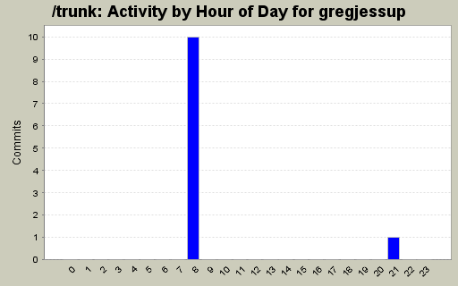
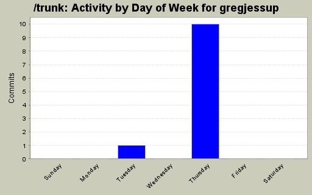
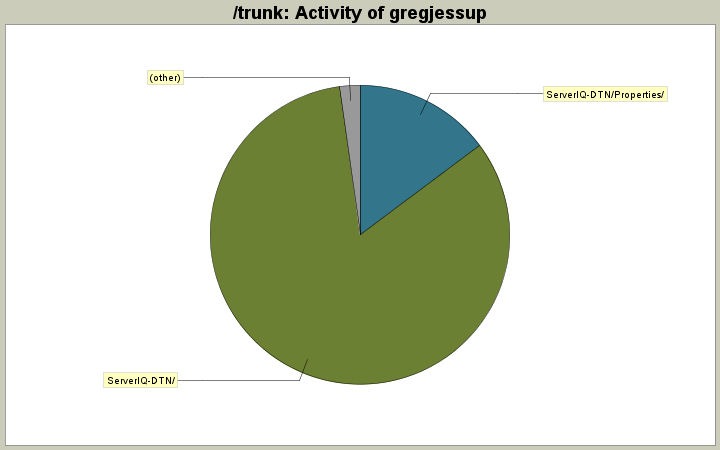

| Directory | Changes | Lines of Code | Lines per Change |
|---|---|---|---|
| Totals | 11 (100.0%) | 1069 (100.0%) | 97.1 |
| ServerIQ-DTN/ | 7 (63.6%) | 888 (83.1%) | 126.8 |
| ServerIQ-DTN/Properties/ | 3 (27.3%) | 158 (14.8%) | 52.6 |
| TradeLinkCommon/ | 1 (9.1%) | 23 (2.2%) | 23.0 |

Adding IQFeed Broker V1.0
Documention to follow.
You will need to import the project into the solution.
1046 lines of code changed in 10 files:
Fix issue 525: If running on 64-bit OS tradelink is in (x86) directory.
23 lines of code changed in 1 file: